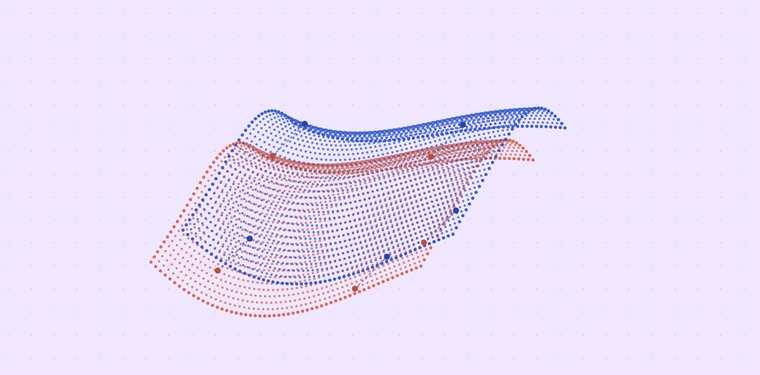
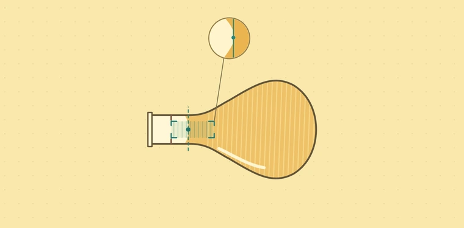

读懂 SLAM 轨迹里的相机位姿
沿着 ORB-SLAM3 的一帧图像，分清跟踪、建图与回环，再用一个三维点检验轨迹方向。
 建筑点云示意
建筑点云示意沿着 ORB-SLAM3 的一帧图像，分清跟踪、建图与回环，再用一个三维点检验轨迹方向。

从一面平墙推导点到面残差，理解配准初值、几何退化和内点覆盖率之间的关系。

从 Kalibr 的两项输出入手，用一个空间点和一个时间戳核对外参与时差的方向。

从自动定容项目的检测代码出发，拆开绿色通道、Sobel 梯度和列投影，观察一帧图像如何变成一个液面坐标。
沿着一扇门框，追踪相机位姿、稀疏点云和屏幕上的像素，读懂 3D Gaussian Splatting 如何生成新视角。

定位轨迹突然跳变时，沿着消息时间、坐标变换和订阅关系回放，查出异常最早出现在哪一层。

沿着自动定容系统的控制通道，理解字节流、半帧、连续帧，以及解析器应该在什么时刻交付一条命令。